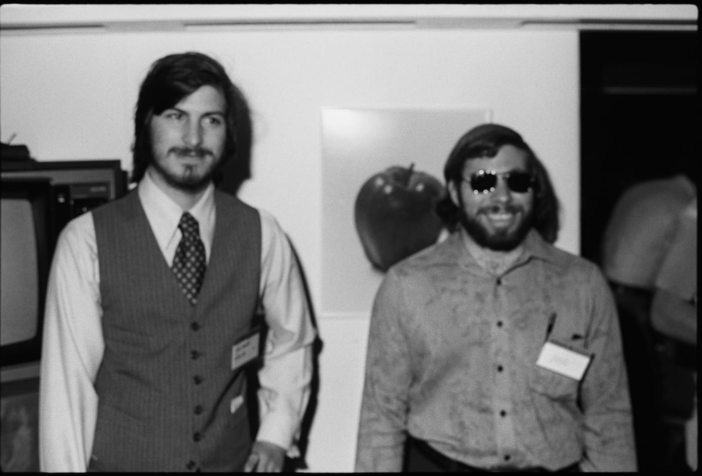

Woz went back to UC Berkeley to finish his degree in electrical engineering/computer science.
Woz went back to UC Berkeley to finish his degree in electrical engineering/computer science.Tribute Page made by Dania Liu
Click here for bibliography1976:
Wozniak and Steve Jobs founded Apple Computer Inc.
1981:
Woz went back to UC Berkeley to finish his degree in electrical engineering/computer science.
1982 - 1983:
He sponsored US festivals when he founded the company Unuson, an abbreviation of “unite us in song”, which was initially intended to celebrate evolving technologies, but ended up as a technology exposition and a rock festival as a combination of music, computers, television, and people.
1985:
President Ronald Reagan handed Woz the National Medal of Technology award for his achievements at Apple.
2006:
 He published his New York Times best-selling autobiography “iWoz: From Computer Geek to Cult Icon.”
He published his New York Times best-selling autobiography “iWoz: From Computer Geek to Cult Icon.”
2013:
 Hoover Medal award, a prestigious honour given for “outstanding extra-career services by engineers to humanity,” and was admitted into the IndustryWeek Manufacturing Hall of Fame.
Hoover Medal award, a prestigious honour given for “outstanding extra-career services by engineers to humanity,” and was admitted into the IndustryWeek Manufacturing Hall of Fame.
2015:
 Woz received the Legacy for Children Award from the Children’s Discovery Museum of San Jose, honouring individuals whose legacy has positively impacted the learning and lives of the next generation.
Woz received the Legacy for Children Award from the Children’s Discovery Museum of San Jose, honouring individuals whose legacy has positively impacted the learning and lives of the next generation.
2017:
 He co-founded Woz U, described to be a postsecondary education and training platform focused on software engineering and technology development. Furthermore, he has recently co-founded Efforce, a platform that leverages disparate applications of blockchain technology.
He co-founded Woz U, described to be a postsecondary education and training platform focused on software engineering and technology development. Furthermore, he has recently co-founded Efforce, a platform that leverages disparate applications of blockchain technology.